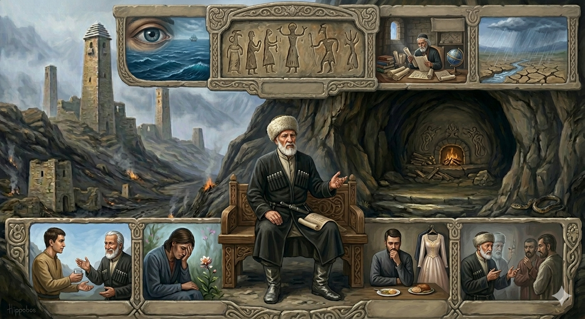

И.А. Дахкильгов. Хьехаме дувцарш - поучительные рассказы-притчи.
И.А. Дахкильгов. Хьехаме дувцарш - поучительные рассказы-притчи. Из ингушского фольклора.

Идриса хьехамаш
Адам-пайхамара ворхӀалагӀча тӀехьенах хиннав Идрис-пайхамар. Цунгара дӀадоладеннад Ӏилма. Цо деннад наха сий, эздел, ираз. Цо даьча хьехамех цхьадараш ераш да: - Барпага (декъий кхухьача хӀаманга) цӀаккха сатем хургбац дуне тӀа адам мел дах. - БӀарг цӀаккха бузаргбац, мелла из дӀахьежарах. - ЦӀаккха хадаргбац сага Ӏилманца бола безам. - Мелла дукха а листа а делхарах догӀано цӀаккха лаьтта дузадергдац. - ӀодоагӀача цхьаккхача хиво форд хьалбузабергбац. - Цаховча хӀамаех хаттараш массе хана хургда. - Кхуврч цӀаккха дахчах бузаргбац. - Сий долаш хургва хьо, наьха сий Ӏа дой. - Могаш хиларо къел тӀерайоаккх. - Сатохаро бала тӀерабоаккх. - Эзделои хозача гӀулакхои Ӏилма сирйрдадоаккх. - Кердадаккхарца тоалуш да дика мел дола хӀама. - Дукха ца леро тоаду къамаьл. - БӀаргий эздел да хьажа ца дезача ца хьажар. - КӀезг-кӀезг хӀама яарца сага чам тоалу. - Шийх доахка гӀалаташ ца дувцийтара дикагӀа йола молха я наьха гӀалаташ ца дувцар. - Хьа дешарах пайда бац, хьайгара гӀалаташ даларах хьо кхераш веце. - Хьо цӀаьрмата хуле, хьай нанас даьна баьча вежарашта а гоама хургва хьо.
РУССКИЙ
Советы Идриса
Седьмого потомка пророка Адама звали Идрис. Был он пророком, и от него пошли науки. Он дал людям честь, благородство и счастье. Вот некоторые его советы: - Носилки для мертвых никогда не будут знать покоя, пока на земле живут люди. - Как бы долго ни смотрел глаз, он никогда не насытится. - Неиссякаемо стремление человека к науке. - Как бы долго и сильно ни лил дождь, он никогда не утолит жажду земли. - Ни одна река не сможет напоить море. - Вопросы о непонятом у людей будут всегда. - Очаг не насытится дровами. - Если ты почтителен, будешь и сам почитаем. - Здоровье скрашивает бедность. - Терпение облегчает горе. - Науку украшают вежливость и лицеприятие. - Все хорошее украшается его обновлением. - Ручь украшает немногословность. - Достоинство глаз в том, чтобы они не смотрели, куда им не положено. - Воздержание в пище облагораживает вкус человека. - Лучший способ скрыть свои недостатки - не говорить о недостатках других. - Если ты не боишься, что совершишь дурной поступок, нет проку от твоей учености. - Если ты не щедр, тебя и родные братья любить не будут.
ENGLISH
Idris's advice
The seventh descendant of the Prophet Adam was named Idris. He was a prophet, and it was he who originated knowledge. He brought honour, nobility and happiness to mankind. Here is some of his advice: - The bier of the dead will never find rest as long as people live on earth. - No matter how long the eye gazes, it will never be satisfied. - Man's thirst for knowledge is inexhaustible. - No matter how long and hard it rains, it will never quench the earth's thirst. - No river can fill the sea. - People will always have questions about what they do not understand. - A hearth can never have enough firewood. - If you are respectful, you will be respected in return. - Good health can brighten up poverty. - Patience eases sorrow. - Science is adorned by courtesy and hospitality. - All that is good is enhanced by renewal. - A stream is graced by brevity. - The dignity of the eyes lies in not looking where they ought not. - Moderation in food refines a person's taste. - The best way to conceal one's own faults is to refrain from speaking about the faults of others. - If you are not afraid of committing a wrong deed, your learning is of no use. - If you are not generous, not even your own brothers will love you.
НОХЧИЙН
Идрисан хьехамаш
Адам-пайхамара ворхӀалгӀачу тӀехьенах хилла Идрис-пайхамар. Цуьнгара дӀадоладелла Ӏилма. Цо делла нахана сий, оьздангалла, ирс. Цо бинчу хьехамех цхьаберш хӀорш бу: - Барамна (декъий кхоьхьучу хӀуманна) цкъа а синтем хир бац дуьненна тӀехь адам мел дех. - БӀаьрг цкъа а бузар бац, мел иза дӀахьежарх. - Цкъа а хедар бац стеган Ӏилманца бола безам. - Мел дукха а листа а делхарх догӀано цкъа а латта дуза дийра дац. - ОхьадогӀучу цхьанна а хино хӀорд хьалбуза бийра бац. - Цахуучу хӀуманах хаттарш массо хенахь хир ду. - Кхерч цкъа а дечигах йузур йац. - Сий долуш хир ву хьо, нехан сий ахь дахь. - Могуш хиларо къоьлла тӀерайоккха. - Сатохаро бала тӀерабоккха. - Оьздангалла а хазачу гӀуллакхо а Ӏилма серладоккху. - Керладаккхарца толуш ду дика мел долу хӀума. - Дукха ца леро тодо къамел. - БӀаьргийн оьздангалла йу хьажа ца дезаче ца хьажар. - КӀез-кӀезиг хӀума йаарца стеган чам толо. - Шех дохку гӀалаташ ца дийцийтаран диках долу молха ду нехан гӀалаташ ца дийцар. - Хьан дешарх пайда бац, хьайгара гӀалаташ даларх хьо кхоьруш вацахь. - Хьо сутара хилахь, хьай нанас дена бинчу вежаршна а гома хир ву хьо.
ПОГОВОРКИ
Божа уст лургбоацачо беттача Ӏаттах ваьккхав. При пахоте не помогший (кому-то) своим быком лишил (просившего) дойной коровы.Вийлачул тӀехьагӀа вийлхар вийлхачул тӀехьагӀа велалургва. Кто, насмеявшись, плакал, тот, выплакавшись, будет смеяться.Дог Ӏаьржа долча саго яьхад: “Наьха мордз Ӏодаха а царна халахийтта хоза хет-кха!” Зловредный говорил: ”Отрадно, когда у кого-то неприятность, пусть хоть такая малая, как пролившаяся сыворотка”.Къе маьчи лелаечул когаш берзан лелар тол. Лучше ходить босиком, чем в тесных чувяках.Къорачунца цхьан минота къамаьл дечул бӀарччача ден никъ бар тол. Лучше целый день идти пешком, чем одну минуту разговаривать с глухим.Малла шийла хиларах Ӏа дӀадоал; мелла гайнабар аьнна, бала а дӀабоал. Сколько ни зла зима – все же она уходит; как ни долго длится горе – и оно проходит.Наха хьадаьр сагага дохалургдац, саго хьадаьр нахага дохалургда. Сделанное народом человеку не сломать, сделанное человеком народ сломит.Тохаргйоаца шалта йоаккхачул тохаргбола бий бича тол. Чем зря вытаскивать саблю из ножен, лучше сжать кулак, который пойдет в дело.Тураца модж яьша веннар корта боацаш висав. Кто использует саблю для бритья ,тот рискует остаться без головы.Уст белча, дулх хиннад; ворда ехача, дахча хиннад. Пал бык – мясо, сломалась арба – дрова.Хица боацар чкъара бац, дынца воацар саг (баьре) вац. Без воды и рыба не рыба, без коня и человек (всадник) не всадник.Хьоастаденна Ӏаса шин Ӏаттах декхад. Ласковый телок двух маток (молоко) сосет.ЦӀи а хий а доацаш вай мегаргдац, царел кхерамегӀа хӀама а дац. Мы не можем жить и без огня, и без воды, хотя нет ничего опаснее их.Ший бӀенах хьазилга а гӀала хет. Даже птичке свое гнездо кажется башней.